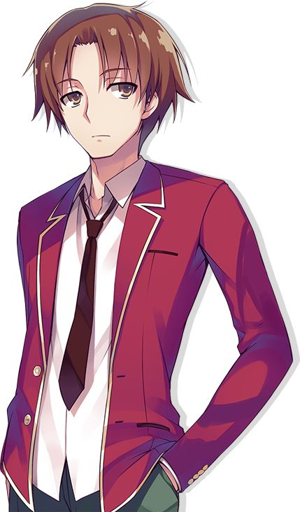
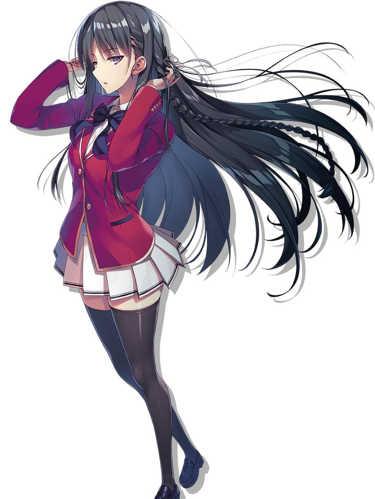
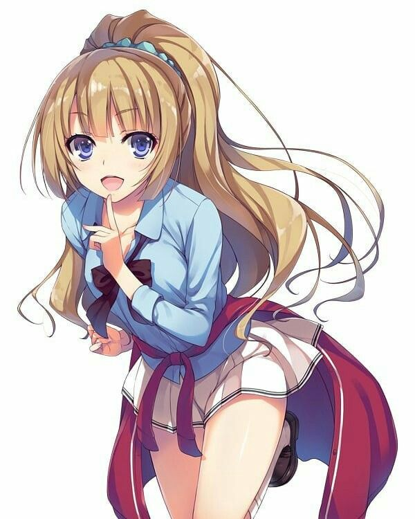
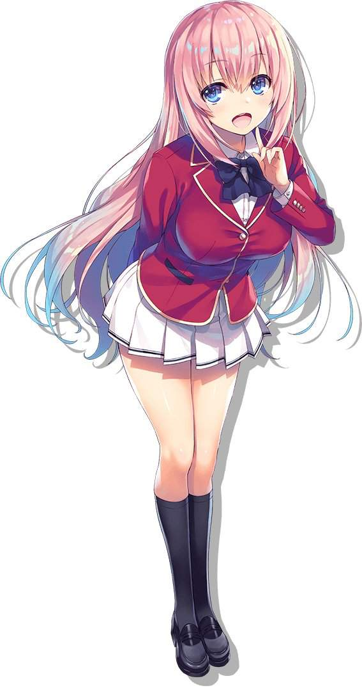
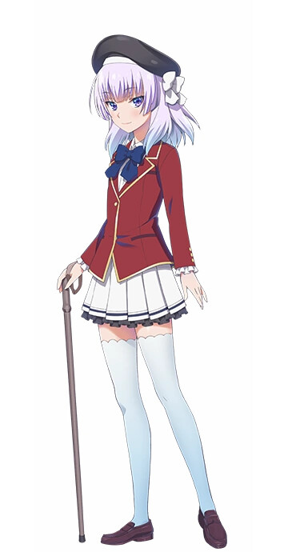
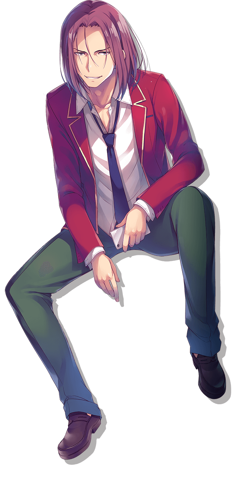
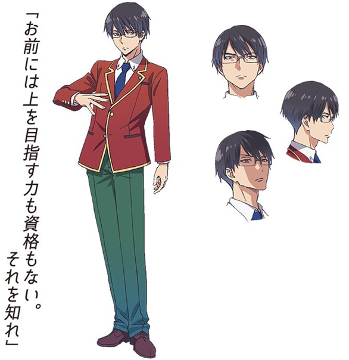

Киётаки Аянокоджи
Появление
Киётака — высокий молодой человек с каштановыми волосами, карими глазами и светлой кожей. Обычно его можно увидеть в стандартной школьной форме. Вне школы он носит белую толстовку с капюшоном, покрывающую зеленую рубашку с оранжевой полосой, и коричневые брюки. Его также можно увидеть в синем жилете поверх белой рубашки и коричневых штанах. Он стал выше с момента своего первого прибытия в школу.
Он считается очень красивым, как упоминалось в лайт-новеллах Кикё Кусида , что он занял 5-е место в икемен среди первокурсников. Это несколько подтверждается, так как он привлек внимание многих девушек из своего класса, некоторые из которых даже очень популярны. [1] Кей , прежде чем она официально начала с ним встречаться, сказала, что он считается одним из 10 самых горячих парней во всей школе. Сато находит его более горячим, чем даже Ёсуке Хирата, несмотря на то, что Киётака отвергает его. У него также невероятно хорошо сложенное тело, на что указала Сузуне Хорикита в бассейне. Она заметила огромное мускулистое строение его тела и его рук, особенно предплечий, и спросила, занимается ли он спортом, на что он категорически ответил отказом. Причина этого, скорее всего, связана с обширным обучением, которое он прошел в детстве в Белой комнате . [2] Большую часть времени он изображает апатичный и праздный взгляд, который излучает беззаботное отношение. Это можно интерпретировать как безразличие или относительно пассивное поведение по отношению к сверстникам. В воспоминаниях показано, что даже в детстве у него было такое же неподвижное выражение лица, которое он сохранял до подросткового возраста. [3]Многие видят в нем человека, лишенного эмоций, поскольку он ни разу не плакал и не улыбался в их присутствии, называя себя ненормальным. В отличие от аниме, в легком романе Киётака (в некоторой степени) изображен с более динамичным выражением лица.
Личность
Киётака - незаметный и ненавязчивый ученик, и хотя его оценки средние (намеренно), он обладает проницательной способностью с предельной точностью читать эмоции окружающих его людей и либо помогать им, либо разрушать их. [1] Несмотря на его очевидную лень и отсутствие интереса ко всему и ко всем, Киётака на самом деле очень умный человек, часто дергающий за ниточки за кулисами. Он хорошо разбирается в истории, поскольку цитировал многих исторических личностей, которые хорошо известны своим интеллектом. [4] Он имеет тенденцию придумывать изобретательные и творческие планы, такие как использование школьных правил, чтобы он мог получить старые тестовые вопросы от старшего ученика класса D, заплатив ему 15 000 баллов. [5] Он также использовал правила и цель очков, чтобы подкупить своего учителя, чтобы он остановил исключение Кена Судо . [5] На самом деле, немногие избранные намекают, что он мог бы легко быть помещен в более высокий класс, такой как A-класс, если бы он действительно приложил усилия. Он несколько социально неуклюж, так как он ужасно общается с людьми и не может правильно с ними общаться. [6] В результате он говорит очень монотонно (в аниме) и стремится изолировать себя от своих сверстников, не вовлекаясь в общественную деятельность. Эти черты, как правило, производят на других впечатление, что он хитрый, безразличный, легкомысленный и беззаботный, а также намекают на отчужденность, медлительность или вообще чувство апатии ко всему, кроме вопросов, которые конкретно его волнуют. [1] Вот почему некоторые люди в его классе до сих пор считают его загадочным существом, несмотря на то, что они были с ним больше года. Тем не менее, показано, что он способен поддерживать некоторые разговоры, хотя и в несколько скучной и монотонной манере, как показано в его взаимодействии с Кикё Кусидой и другими его одноклассниками. [7] Хотя он прилагает больше усилий для общения с теми, с кем он действительно близок, и в глубине души тайно заботится о них.
Физические способности
Показано, что Киётака - это нечто большее, чем он показывает, как во время его встречи с Манабу Хорикитой, ветераном черного пояса. Хотя Киётака не атаковал, он смог относительно легко уклониться от всех ударов Манабу в битве и сумел отразить рассчитанный удар, заставив Манабу создать расстояние между ними. Это действие заслужило похвалу от Манабу, который спросил, какие боевые искусства он практиковал, но вместо этого получил в ответ неубедительный ответ, демонстрирующий превосходство Киётаки в боевых искусствах и уклончивый характер. [8] Лучшие бойцы школы Сузуне Хорикита , Манабу Хорикита , Итика Амасава , Какеру Рьюени его группа, все, в свою очередь, признают и уважают его боевое мастерство, все они скорее остаются в его благосклонности и не делают его врагом во время физических столкновений.
Интеллектуальные способности
Показано, что Киётака чрезвычайно умен, поскольку он намеренно набрал ровно 50 из 100 баллов по каждому предмету на вступительных экзаменах. Он даже более умен, чем Сузуне Хорикита , которая имеет самые высокие баллы в своем классе и которая позже заставит его помочь ей достичь A-класса. [16] Он также является очень опытным переговорщиком, так как смог получить ответы на старые тесты от старшеклассника, используя как чары Кикё Кусиды , так и его обманчивую натуру. Он также продемонстрировал это, отменив исключение Кена, предложив баллы своему учителю, зная, что это было в рамках школьных правил, и с помощью Сузуне его план удался, заслужив похвалу от своего учителя. [5] Он невероятно проницателен и дотошен, и почти все время показывает, что он очень точен, поскольку он мог изучать точные личности других, как показано, когда он вывел страх Айри Сакуры перед незнакомцами. [4] Он очень быстро схватывает ситуацию, когда делает вывод, что Чихиро Ширанами была поклонницей Хонами Ичиносе , [7] что Айри угрожает нападение преследователя [3] и видит сквозь фасад здоровой Сузуне, когда она был болен в тесте на выживание. [17]Он также знал, что Какеру все еще был на острове во время теста на выживание, просто потому, что увидел коммуникатор, который у него был, и понял, что Мио была шпионом C-класса, и перехитрил ее, саботировав ее камеру и убедившись, что она украдет карту лидера. прежде чем стать лидером класса. [11] Наибольшее проявление его интеллекта было, когда он вычислил план класса 1-А и класса 1-С во время одного и того же теста. Он был опытным мастером в искусстве манипулирования, зная, какие люди замышляют и кого он мог использовать, чтобы заставить игру работать в его пользу, в конечном итоге выиграв тест для своего класса. Этот невероятный поступок удивил Кохея Кацураги и Какеру Рьюена , у которых был верный способ выиграть испытание. План Киётаки принес ему похвалу как от Сузуне, так и от Саэ Чабаширы , которые оба были удивлены тем, как прошел тест, и спросили, почему он пытается, если он не хочет продвигаться вперед. [11]
Академические способности
Хотя Киётака предпочитает не привлекать к себе внимание и предпочел бы скрыться на заднем плане, он обладает выдающимися талантами в учебе, которые невозможно скрыть, что было видно, когда президент школьного совета и его классный руководитель сильно намекнули, что он намеренно перешел в класс D, чтобы скрыть свои истинные таланты. Киётака даже отклонил предложение присоединиться к студенческому совету, чтобы избежать дополнительной работы, что показало, что у него большой талант в искусстве быть незаметным, за исключением тех немногих, кто случайно заметил его таланты. В частности, Манабу Хорикита , Хонами Ичиносе , Саэ Чабашира , Сузуне Хорикита и Чие Хошиномия.все намекали, что Киётака, безусловно, самый умный ученик в своем классе и мог бы без особых усилий попасть в старшие классы. [1] [18] [19] [20] Это, похоже, подтвердилось, поскольку Саэ приказал Киётаке немедленно начать стремиться к достижению класса 1-A или быть исключенным за то, что он не применил себя, что указывает на то, что он может легко достичь этого. [10] Было показано, что его интеллект даже превосходит мышление и изобретательность Кохея Кацураги , который считается вторым самым умным на уровне года. [11] Его действия в тесте на выживание даже заставили Сузуне усомниться в том, что им движет, поскольку он доказал, что более чем квалифицирован для участия в А-классе. Саэ также был поражен его планом быстро остановить один из других классов, даже похвалив его. В манге, даже с ограниченными результатами, которых он позволяет себе достичь, под бдительным оком Саэ она намекнула, что он может быть даже академически умнее, чем даже Сузуне с его скрытыми выступлениями, что примечательно, поскольку она исключительно хороша в своих академических способностях. . Сузуне с готовностью согласилась с заявлением Саэ, увидев результаты его вступительных экзаменов, и спросила, не ошибся ли он в некоторых вопросах намеренно. [3] Он также смог придумать планы за более короткий промежуток времени, чем она никогда не смогла бы сделать это сама, оказываясь в зависимости от его помощи много раз. Позже, в разговоре с Кей Каруизавой , Киётака заявляет, что с тех пор, как он прибыл в школу, нет ни одного вопроса, который он не смог бы решить. Это особенно примечательно, поскольку школа намеренно добавила вопросы университетского уровня, выше которых самые яркие умы учеников, такие как Хонами Ичиносе, признались, что она даже не могла понять, что задавал вопрос, а Арису Сакаянаги не смогла вовремя ответить на вопросы.
Сузуне Хорикита
Появление
У Сузуне длинные черные волосы с одной косой, перевязанной розовым бантом, а также градиентные красные глаза. Ее всегда видят с суровым выражением лица. У нее стройное, но хорошо одаренное тело, которое выделяет ее как красивую, даже привлекая внимание Кена Судо и Какеру Рьюена . Обычно она носит стандартную школьную форму. Вне школы она носит полосатый сарафан и шляпу от солнца. Она также была замечена в белом бикини у бассейна и в красном спортивном костюме, когда первокурсница проходила тест на выживание.
Личность
Сузуне — серьезная, умная девушка, которая редко проявляет какие-либо эмоции и, как правило, кажется равнодушной к большинству вещей, что доказано, когда она осталась равнодушной после угроз со стороны мальчика из класса 1-C . Она кажется довольно холодным и отстраненным человеком по отношению к своим одноклассникам из-за отсутствия общения с ними, а также из-за ее склонности дистанцироваться и смотреть на них свысока. Из-за такого отношения она открыто честна во многих вещах, что видно, когда она призналась, что у нее нет друзей, поскольку она думает, что друзья только потянут ее вниз, но это начало меняться по мере развития сериала. Сузуне обладает антисоциальным мировоззрением, из-за чего она почти ни с кем не разговаривала, кроме Киётака Аянокоджи , и никому не доверяла, особенно тем, кто пытался подружиться с ней, таким как Кикё Кусида . Однако, в отличие от Киётаки, который изначально хотел завести друзей, она была его противоположностью, поскольку игнорировала это, думая, что это не более чем отвлечение, и думала только о повышении до класса А. Киётака и ее брат, что ее отношение и неспособность должным образом работать с людьми или ее склонность слишком сильно сосредотачиваться на своей цели были причиной того, что она была помещена в класс D. Сузуне трудно убедить, поскольку она отказывалась признать, что ее поместили в класс D, и поставила перед собой цель подняться в более высокий класс, несмотря на то, что это была нереальная цель, которой никогда не было в истории школы. Однако эта цель была опровергнута ее братом, который сказал ей, что она не знает о своем бесхарактерности, которая существенно сдерживает ее, и ей следует просто покинуть школу. Она отказывалась верить, что ей нужны друзья, чтобы помочь ей, хотя и убедила Киётаку помочь в достижении ее цели. Когда Киётака указал, что ее изоляция по отношению к другим могла быть причиной того, что она была помещена в класс D, она быстро отрицала это, но, казалось, ненадолго обдумывала такую возможность. Хотя в целом она спокойна, ее страх действительно проявляется, когда она находится в присутствии своего старшего брата, который также является президентом студенческого совета. Это отображается, когда Сузуне действительно выражает своего рода деликатность в отношении некоторых проблем. Она очень восхищается своим братом, но в то же время чувствует себя ниже его из-за его достижений по сравнению со своими недостатками. Было показано, что Сузуне дрожит от страха перед ним, как видно на их тайной встрече, когда он чуть не напал на нее в Эпизоде 2 . Это снова было замечено в Эпизоде 5 , где она обнаружила, что не может говорить во время слушаний Кена Судо , и смогла вырваться из этого только из-за вмешательства Киётаки.
Физические способности
Было заявлено, что Сузуне является пловцом выше среднего, когда Кикё Кусида допросила ее в школьном бассейне, где она также сказала, что владеет боевыми искусствами во время слушаний по делу Кена Судо , но в полной мере ее способности неизвестны. Она доказывает, что хорошо владеет искусством борьбы, поскольку без труда перевернула Харуки Ямаути . Ее боевые навыки дополнительно проявляются, когда она вступила в бой с Мио Ибуки , заслужив похвалу от нее, прежде чем быть сбитой с ног, хотя плохое состояние Сузуне сдерживало ее в бою. Она может быть опытным бойцом, но далеко не лучшим, как видно, когда она была легко побеждена раненым и утомленным Итика Амасава.
Интеллектуальные способности
Неудивительно, что Сузуне очень умна и постоянно получает хорошие оценки на протяжении всего своего школьного пути. Саэ Чабашира рассказала в первом томе, что на вступительных экзаменах она получила третий по величине средний балл среди первокурсников. Хонами Ичиносе , ученица класса B, также отмечает, что она одна из немногих людей в классе D, за которыми нужно следить из-за ее потенциала. Однако ее снисходительное отношение и слабость делают ее легко восприимчивой к атакам других классов, и ее спас только Киётака, который много раз вмешивался в ее защиту, прежде чем она потерпела поражение. Она до сих пор не верит в цель укрепления хороших отношений и делает это только для достижения своих целей. У нее также есть аналитическая сторона, как показано, когда она изучает людей по их привычкам или фрагментам их личности, чтобы увидеть их истинные глубины. Например, она пришла к выводу, что Киётака Аянокоджи приложила руку к тому, чтобы помочь их классу пройти тесты, и что Кикё Кусида , похоже, категорически не любит ее, несмотря на то, что она «дружелюбна» ко всем. Она также смогла увидеть, как Киётака скрывает свои истинные таланты, услышав своего брата Манабу Хорикиту.и их учитель объясняет, что в нем есть нечто большее, чем он показывает. Она признает, что она далеко не лига Киётака в этом отделе после того, как он снова и снова побеждал его, и всегда ищет его проницательные идеи всякий раз, когда возникают проблемы. Она достаточно взрослая, чтобы понять, почему Киётака не хочет показывать свои истинные способности и позволяет ему использовать ее в качестве мясного щита за свои достижения, чтобы создать свою репутацию в классе.
Академические способности
Сузуне очень предана и усердна в учебе, ей больше нечего делать. Это также подтверждается ее непоколебимой приверженностью достижению класса А, в который, по ее мнению, ее должны были поместить с самого начала из-за ее хороших оценок и надежды, что ее брат, наконец, обратит на нее внимание.
Кей Каруизава
Появление
Кей — девочка-подросток среднего роста со светлыми волосами до талии, собранными в хвост, и фиолетовыми глазами. Ее школьная форма состоит из светло-голубой классической рубашки под красным школьным пиджаком с закатанными рукавами и короткой белой юбки. Она ходит в стандартных школьных туфлях с голубыми носками до икры. Она преимущественно носит синюю ленту вокруг воротника. В более непринужденной ситуации она просто оборачивает свой школьный блейзер вокруг талии и закатывает рукава классической рубашки сверх обычной нормы. Она очень гордится и заботится о своей красивой внешности и известна в классе как одна из самых модных и модных учениц в своем классе.
Личность
В начале сериала Кей предстает неряшливой и избалованной девушкой, которая заботится только о себе. Она проводит большую часть своего времени с девочками после школы и использует свои баллы для покупки одежды и аксессуаров. В классе ею восхищаются и боятся за ее сильную личность и ее статус девушки Ёсуке Хираты всего через две недели после поступления в школу, что утвердило ее позицию лидера девочки в классе D. Однако, несмотря на ее внешность и отношение, она показывает, у нее есть своя доля секретов, которые она не может позволить раскрыть другим. Она не смущалась и не стыдилась комментариев, сделанных другими людьми за описание ее дерзких действий с мальчиками, которые привлекли ее внимание. Под своей напыщенной маской, которую она носит перед людьми, Кей — девушка, которую мучают призраки ее прошлого, которая может быть слабой и чувствительной к своему окружению. Несмотря на то, что она производит впечатление человека небрежного, высокомерного и неряшливого, истинное «я» Кея очень логично и проницательно с острым умом. У нее замечательная способность читать окружающую среду и людей вокруг нее, и она часто принимает правильное решение. Она самосознательный человек, который лучше, чем кто-либо, знает свой собственный характер и ограничения. У нее также, кажется, развился циничный взгляд на свое окружение и отношения. Она считает, что все ненавидят ее и проявляют к ней интерес только из-за ее положения и статуса в классе, что заставляет ее очень осторожно относиться к своим действиям по отношению к своим друзьям, чтобы оставаться в их благосклонности.
Способности
Кей был оценен как неудовлетворительный по школьным стандартам. Ее частые необъяснимые пропуски занятий и оценки ниже среднего в средней школе были прямыми причинами того, что ее поместили в класс D. Она не любит учебу и спорт, но на удивление способна конкурировать с другими в обоих случаях, когда она готова приложить усилия. Киётака пришла к выводу, что если бы она усердно работала в течение короткого периода времени, она легко смогла бы добиться значительных улучшений, как Кен Судо в своем OAA. По словам Киётаки Аянокоджи и Какеру Рьюена, Кей обладает огромной силой духа и неукротимой волей никогда не поддаваться жизненным испытаниям. Она продемонстрировала высочайший уровень лояльности в самые ответственные моменты, когда кажется, что все против нее, что даже удивило Киётаку. Любой нормальный человек отказался бы от жизни, испытав лишь часть того, через что она прошла, однако она пошла вопреки всему и в конце концов обрела истинное счастье в образе Киётаки. Она стойкая и будет проявлять геркулесов всякий раз, когда Киётака просит ее о помощи, иногда даже удивляя себя тем, насколько она готова пойти на него. Было показано, что она не остается удрученной или подавленной в течение длительного периода времени, несмотря на все, казалось бы, непреодолимые трудности, с которыми она столкнулась. Однако последняя соломинка, которая сломает верблюда'
Хонами Ичиносе
Появление
Хонами описывается как молодая девушка-подросток, которую сверстники и старшеклассники считают одной из самых привлекательных и привлекательных учениц старшей школы. Киётака Аянокоджи даже назвал ее красивой из-за светло-коричневых волос до спины и голубых глаз. По словам Киётака, на круизном лайнере он не мог отвести взгляд от чарующих голубых глаз Хонами, которые угрожали всегда втягивать его в себя, когда он смотрел прямо в его сторону. В частности, в книгах описывается Хонами с длинными светло-розоватыми волосами, которые спускаются по длине до талии или бедер. Помимо среднего роста, она обладает очень хорошей фигурой, которая вызывает зависть у Сузуне Хорикиты .. Хонами отмечает, что она пережила значительный скачок роста с бюстом своего тела, продолжая расти со временем немного больше с тех пор, как она училась на третьем году обучения в средней / средней школе.
Личность
Если бы можно было описать Хонами одним предложением, это было бы то, что она искренне добросердечна, доброжелательна и до мозга костей пацифистка, которая против использования закулисных средств и насилия. Она чрезвычайно привлекательна и интерактивна во время социального взаимодействия со своими сверстниками, готова подружиться со всеми людьми в классе и за его пределами с распростертыми объятиями, будь то учитель или ученик, легко привлекая всеобщее внимание исключительно к себе. Одной из ее главных черт является ее самоотверженный и поддерживающий характер в сочетании с ее отличными социальными навыками и естественной ориентацией на людей. Хонами также является харизматичным, энергичным человеком без скрытых мотивов и распространяет свой милый и добрый характер даже на учеников низших классов и уровней, в отличие от многих других учеников старших классов. В рассказе первого годаУчащиеся класса 1-C и один из класса 1-D от вспышек, имеющих острый язык, чтобы критиковать других за попытки подстрекать к насилию, особенно в библиотеке. Без прямой ругани или неуважительного насмешек над правонарушителями, самое большее, что она сделала, это была осуждающая и предусмотрительная, указывая на их грубое поведение в общественном месте, напоминая им, чтобы они были вежливы и тактичны и уважали спокойствие там, где они находились. По этой причине ее также можно рассматривать как строгого, честного человека, который следует кодексу поведения, действуя в соответствии с тем, в какой среде она находится, например, в библиотеке, тихом месте, которое должно было быть предназначено для чтения и чтения. изучение. [1]У нее менталитет решателя проблем, она готова принять вызов своим умом, сохраняя спокойствие и ясную голову, даже когда одна часть ее группы не сотрудничала с другими членами. Киётака отмечает, что она не из тех людей, которые будут плохо говорить о других без какой-либо причины. Кроме того, ее добродушный нрав также позволил ей подружиться с такими людьми, как Кикё Кусида и Киётака Аянокоджи , несмотря на то, что они оба были учениками класса 1-D, на которые высшие классы смотрели свысока и считали их ущербными существами. .
Физические способности
Мало что известно о физических возможностях Хонами, хотя в ее рассказе в 3-м томе лайт-новеллы 1-го года упоминается, что она не очень хорошо разбирается в легкой атлетике из-за того, что ее способность поддерживать равновесие тупая. Несмотря на свою слабость, она все еще способна в некоторой степени заниматься спортом. Она уверенно утверждает, что ее скорость бега довольно высока. [26]Она даже признает, что степень ее скорости основана на ее собственном прошлом опыте участия в мероприятиях клуба легкой атлетики. Не только это, но и проблеск ее способностей был также показан в бассейне, где она играла в волейбол со своими друзьями и учениками класса D. В следующих томах, хотя она никоим образом не была уверена в своих физических возможностях в целом, Хонами признает, что она по крайней мере, очень гордилась своей замечательной скоростью, особенно когда пыталась обогнать двух сильно тренированных взрослых мужчин, таких как Цукисиро и Кацунори Шиба.. Тем не менее, несмотря на то, как быстро она заставляла себя бежать, Хонами все же могла в конечном итоге потерять равновесие по пути после того, как случайно соскользнула в сложную местность, из которой трудно и неприятно выбраться. Например, когда она оказывается в опасной ситуации, когда это сильно сказывается на ее психическом состоянии, например, в бреду, это мешает Хонами постоянно поддерживать свое физическое движение. К тому времени Хонами потеряет полный контроль над собственным равновесием и равновесием, бездумно предпринимая шаги без предосторожностей, чтобы сбежать из окружающей среды, прежде чем упасть под землю.
Интеллектуальные способности
Хонами имеет проницательную и интуитивную сторону своего интеллекта, [28] поскольку она узнала истинный и хорошо скрытый интеллект Киётака Аянокоджи и увидела, что он тот, кого не следовало помещать в класс D с самого начала. Эта любознательная сторона была замечена еще раз, когда она мудро обратила внимание на учеников класса D, у которых есть огромный потенциал подняться в старшие классы благодаря их талантам и тому, что их нельзя недооценивать, независимо от того, что о них говорит их репутация. Она способна читать настроение и атмосферу людей, легко замечая, что ее присутствие не приветствуется группой Аянокоджи.после первой встречи с Киётакой и его кругом новых друзей. Более того, она тщательно обдумывает последствия и возможности того, почему кто-то вроде нее был помещен в Группу Кроликов, а не в Группу Драконов, состоящую из лидеров классов. Судя по аниме, она, кажется, отлично умеет читать чувства людей к кому-то, поскольку она легко улавливает очевидное романтическое влечение Айри Сакуры к Киётаке.
Академические способности
Хонами оказался очень умным и сообразительным человеком, который, как говорят, не уступает ученикам из класса А в учебе. Еще одним заметным достижением является то, что она может без особых усилий выполнять свои обязанности представителя класса, и ее оценки ничуть не ухудшаются. Что касается ее роли, Хонами, как известно, участвовала в личных обсуждениях школьных дел, например, когда Киётака увидела, что она связана со своим классным руководителем Чие Хосиномия и вещами, связанными со школьным советом .. Мать Хонами дошла до того, что строго посоветовала Хонами быть прилежной ученицей, которой нужно уделять первоочередное внимание учебе в школе, заставив девочку сосредоточиться на учебе, а не на поиске работы, чтобы найти работу в раннем возрасте. И в старшей школе, и даже в средней школе она высоко ценилась как отличница, заботясь о том, чтобы помогать сверстникам с трудностями, такими как улучшение их успеваемости перед тестом. Однажды Хонами организовала сессию учебной группы с одноклассниками и друзьями, и они смогли набрать проходные баллы в викторине после того, как она недолго обучалась у нее. [23]Это также говорит о том, что обучение и репетиторство других также являются одной из ее сильных сторон в учебе, поскольку она смогла помочь своим одноклассникам улучшить и понять различные концепции лучше, чем в школьной системе. Сузуне Хорикита также упомянула , что Хонами обычно была бы помещена в класс А за ее превосходные способности, но была вынуждена перейти в класс 1-В по неизвестным ей причинам. Один из ее одноклассников даже заявляет, что если бы школа использовала только оценки для определения места Хонами среди классов, она, несомненно, была бы помещена в класс А.
Арису Сакаянаги
Появление
Арису — миниатюрная девочка-подросток с сиреневыми волосами и фиолетовыми глазами. Она носит стандартную женскую школьную форму, ее аксессуарами являются черный берет на голове с серой лентой и пара белых чулок с подвязками. Она часто ходит с тростью и довольно маленького роста для своего возраста по сравнению с другими одноклассниками из-за врожденного порока сердца . [1] Многие люди в школе находят ее милой, но боятся подойти к ней из-за силы и господства, которыми она обладает.
Личность
Арису, кажется, обладает отношением «плыть по течению», поскольку она принимает большинство ситуаций без протеста или жалоб. Хотя она открыто заявляет о своей неприязни к скучным ситуациям после того, как Кохей Кацураги (одноклассник Арису) рассказал об оценках класса. В отличие от Кацураги, занимающего консервативную позицию, Арису обладает новаторским взглядом на вещи. Вместе пара эффективно ведет класс А в школьные годы. В глазах одноклассников она считается кем-то, кто выделяется среди остальных и что никто никогда не видел, чтобы она теряла самообладание. По правде говоря, она такая же, как и любая нормальная девушка, и единственный, кому разрешено и кто видел ее поведение таким образом, - это Киётака Аянокоджи . Ей нравятся ситуации, которые она находит интересными, например, когда она улыбалась заявлению Какеру Рьюена о правлении школой или когда она слушала речь Сузуне Хорикиты . В легких романах Арису нравится играть с людьми, как видно, когда она загадочно намекнула, что знала Киётаку, тогда как он не помнит, чтобы встречался с ней раньше. Позже, будучи вместе с Хонами Ичиносе , она также казалась очень уверенной и самодовольной после того, как Терухико Юкимура из Ayanokōji Group смело заявил, что у D-класса есть план вскоре обогнать A-класс. Она всегда несет в себе ауру невозмутимости и кажется мудрецом, когда кто-либо находится в ее присутствии. Хотя ее мягкий тон мог легко заставить людей чувствовать себя комфортно рядом с ней. Кроме того, хотя у нее покладистый характер, в последней части сериала было показано, что ее легко спровоцировать, когда ее описывают на основе ее миниатюрной внешности (например, «Маленькая девочка»), поскольку она считает, что это не дает ей справедливости. , из-за ее властных качеств. Она может показаться эгоистичной и высокомерной по отношению к зрителям, однако это также частое использование одной из ее тактик, чтобы установить контроль над умами тех, кого она выбрала. Она также держит обиду, но не показывает ее снаружи
Интеллектуальные способности
Арису известна своим обширным интеллектом, который даже получил похвалу от многих людей из других классов, таких как Хонами Ичиносе , представитель класса B, которая сообщила своему учителю Чие Хошиномия , что Арису — это тот, кого они должны активно остерегаться. Она также очень манипулятивная, хитрая и проницательная в своих планах, с которыми может соперничать только Киётака. Она знает, как играть со своим обаянием и красотой, и не прочь использовать их для достижения своих целей, таких как изгнание Харуки Ямаути . Один из способов, которым она это делает, — играть на силе своих союзников, нацеливаясь на слабости своих врагов, нанося им вред до того, как они смогут атаковать. Например, она смогла эмоционально травмировать Хонами, раскрыв свой секрет, эффективно лишив лидера второго лучшего класса и их шансы конкурировать с ней. Кроме того, она использовала Хонами в своих интересах, используя добрую и всепрощающую природу Хонами, заключив с ними союз раньше, чем другие классы. Она также очень хороша в шахматах, вполне способна быть на национальном уровне и даже доставлять трудности Киётаке, которого с юных лет обучали играть в них практически идеально. Она легко может учитывать идиосинкразические мыслительные процессы своего противника в своих планах, думая более чем на 10 шагов вперед и противодействуя им в течение нескольких секунд.
Академические способности
Арису известна тем, что получает отличные оценки в течение учебного года и имеет самый высокий общий балл за год в OAA. Даже Манабу Хорикита, бывший в то время президентом школьного совета с очень высокими стандартами, хвалила ее оценки на недавних промежуточных экзаменах. Это было примечательно, поскольку единственным другим человеком, которого он когда-либо видел комплиментом, был Киётака Аянокоджи , который чрезвычайно умен и умеет самостоятельно манипулировать своими академическими способностями. Она легко может похвастаться одним из самых высоких показателей успеваемости и адаптивности за всю историю школы. Во время партнерского экзамена , где многие вопросы были такими же трудными, как и вопросы в колледже, Киётака признал ее за высокие оценки по ним, хотя она не ходила ни в какие учреждения, такие как Белая комната .
Какеру Рьюен
Появление
Какеру - молодой человек среднего роста с пурпурными волосами до плеч, уложенными с обеих сторон, и острыми пурпурными глазами, которые вселяют страх и трепет в любого, с кем он вступает в контакт. Кроме того, у него стройное и мускулистое телосложение. В лайт-новелле он носит стандартную школьную форму. Хотя в аниме его одежда состоит из стандартного красного пиджака и расстегнутой черной рубашки без галстука.
Личность
Какеру - заслуживающий порицания и предосудительный человек, который любит доставлять неприятности другим, как видно, когда он и его банда целенаправленно вызвали конфликт с Кеном Судо и хотели его исключить. Он также обладает садистским характером, как показано, когда он выглядел так, как будто собирался напасть на уязвимого Кена после того, как его люди схватили его только для того, чтобы вместо этого ударить его по голове, смеясь над его страхом. Он был очень безжалостен, когда взял стеклянную бутылку и ударил ею одного из своих последователей по голове, не выказывая никаких угрызений совести после поступка. Это и многие другие действия показывают, что он готов использовать последователей для любой цели, которую он считает подходящей для достижения своей цели - контролировать школу и получать удовольствие. Также показано, что он непослушный и неуважительный по отношению к некоторым персонажам, как показано, когда он разговаривал с Сузуне Хорикитой и Мио Ибуки , даже когда Альберт Ямада бросил последнюю после того, как сказал ей прийти в его комнату. Несмотря на свой устрашающий и опасный вид, Какеру по-своему проницателен, так как он быстро заместил следы, сказав Хонами Ичиносе, даже когда она стала свидетельницей этого события, заявив, что это было из самообороны. Он придумывал много неожиданных стратегий, например, когда он и один из его последователей напали на другого раненого последователя, который не смог обвинить Кена Судо в нападении и добиться его исключения. Он также решил не вступать в драку с классом 1-A в присутствии Манабу Хорикиты , президента школьного совета, и знает, что в данный момент он не способен сразиться с Арису Сакаянаги .
Физические способности
Показано, что Какеру очень силен, так как он смог запугать и получить полную власть над Даичи Ишизаки , который был печально известным преступником в средней школе и видел свою долю драк. Он также не боится затевать драки и смог напугать Кена, еще одного правонарушителя. Также видно, что он способен нанести физический вред Мио Ибуки и относительно легко одолеть ее, несмотря на ее знание нескольких навыков боевых искусств и заявленную как самую сильную второкурсницу. Например, он даже не вздрогнул, когда она попыталась пнуть его.
Интеллектуальные способности
Несмотря на его регулярные насильственные действия и упорство, Какеру показан как очень умный человек, поскольку он успешно убедил и заключил союз с Кохеем Кацураги , чтобы помочь ему в испытании на выживание. Он также подсадил шпионов в соответствующие лагеря классов 1-B и 1-D, чтобы узнать личности лидеров и набрать очки для своего класса, чтобы лидеры соответствующих классов не узнали об этом. Он сделал это, чтобы набрать больше очков из-за контракта с Кохеем. Его план смог переиграть Сузуне Хорикиту и был бы успешным, если бы его не перехитрила Киётака Аянокоджи.вмешательство. В конце концов, он смог убедить Кохея присоединиться к его классу и покинуть класс А, обратившись к его сложной истории с Арису Сакаянаги. Говорят, что его лидерство и присутствие в его классе - единственная причина, по которой они могут оставаться конкурентоспособными с другими классами, и без него его класс был бы в постоянном столпотворении.
Манабу Хорикита
Появление
Манабу — хорошо сложенный молодой человек среднего роста с короткими седыми волосами, зачесанными налево, фиолетовыми глазами и очками в квадратной оправе. Его обычно видели в стандартной школьной форме, а также в плавках, например, в бассейне
Личность
Манабу очень умный и серьезный человек, который очень предан своему долгу в качестве президента студенческого совета. Он высоко ценит свою роль, демонстрируя свою веру в то, что его репутация может быть запятнана, если обнаружится, что Сузуне Хорикита была в классе D, самом низком классе. Он не терпит оправданий, так как не мог поверить или принять слова своей сестры о том, что ее перевод в класс D не был ее ошибкой. Без угрызений совести он почти дошел до попытки напасть на Сузуне, демонстрируя свою жестокую сторону, прежде чем вмешался Киётака Аянокоджи . Он быстро попытался выместить на нем свою ярость, но последний легко парировал его удары. После битвы, вместо того, чтобы извиниться перед сестрой, он сделал ей выговор за антиобщественный характер и сказал ей работать усерднее, если она не хочет учиться в младших классах школы. Похоже, ему нравятся сложные социальные ситуации, как показано, когда он ухмыльнулся жалобе на Кена и когда он сообщил Сае Чабашире , почему он присутствовал на слушании. Несмотря на его серьезное мировоззрение и репутацию, он не прочь воздать должное тем, кто производит на него впечатление, о чем свидетельствует его общение с Арису Сакаянаги и Кохеем Кацураги .об их успехах на недавних испытаниях. Это отношение появилось снова, когда он похвалил Киётаку после того, как выстоял в битве с ним. Похоже, он проявляет определенное уважение к Киётаке, поскольку его действия привлекли его внимание, продемонстрировав, когда он намекнул, что Киётака намеренно вошел в класс D, полагая, что скрывает то, на что он полностью способен, и разочаровывается, когда Киётака делает что-то, на что он не способен. не оправдать его ожиданий, таких как события со слухом Кена. Тем не менее, он был готов позволить Киётаке стать частью студенческого совета из-за, казалось бы, восхищения его талантами, и хотя его предложение было изначально отклонено, он не отказался от попыток завербовать Киётаку.
Способности
Как бывший президент школьного совета, Манабу имел большую власть над учениками, что особенно проявилось, когда он запугал Какеру Рьюена , правонарушителя с сильным влиянием. Он единственный известный человек, способный вызвать страх и ужас в Сузуне Хориките , которая безразлична к большинству вопросов, даже если она подвергается прямым угрозам. Он очень искусен и опытен в боях, так как имеет 5-й дан по карате и 4-й дан по айкидо , что является высокими званиями для его возрастной группы. [2] Некоторые из его навыков боевых искусств были показаны в Эпизоде 2 , когда он напал на Киётаку Аянокоджи , хотя последний с относительной легкостью избежал удара, к большому удивлению Манабу. Сузуне даже поручилась за мастерство своего брата и была поражена, что Аянокоджи избегал его атак, не говоря уже о том, чтобы противостоять ему. Зная, что продолжение боя не принесет ему никакой пользы, он остановился, признав таланты своего противника. У него есть проницательная сторона, поскольку он смог распознать таланты Киётаки из их короткой стычки и сразу же идентифицировал его как ученика, который набрал одинаковые 50 баллов ровно на всех вступительных экзаменах. Это было замечено снова, поскольку он мог сказать, что Киётака сыграл некоторую роль в мрачной жалобе от C-класса. Он правильно сделал вывод, что сделал это намеренно, чтобы скрыть свои истинные таланты, и даже предложил ему роль в студенческом совете, несмотря на то, что он был учеником класса D, демонстрируя большое уважение и ожидание от него после их краткого общения.
